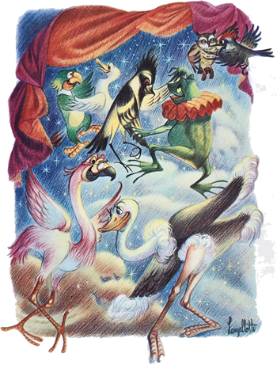
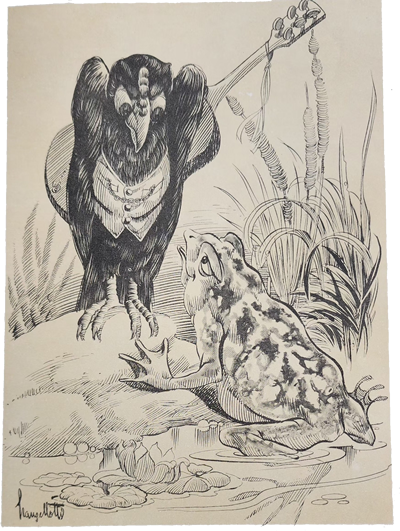
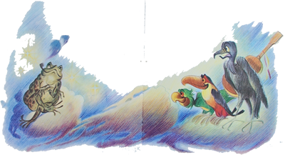

Mais tarde, após um delicioso passeio que haviam dado, resolveram todos descansar num lugar muito gostoso, pois grandes e centenárias árvores faziam sombra e uma fonte murmurava docemente. Espalharam-se por ali, cada um procurando fazer o que mais lhe apetecia: Jaci e Marisa andavam atrás de flores; Sérgio procurava insetos raros para mostrar na escola; Iberê e Carlinhos passeavam juntos à procura de não sabiam o que; o Arrelia cochilava meio encostado numa árvore. Alguns momentos mais tarde, um pássaro começou a cantar nos ramos da mesma árvore e o Arrelia acordou. Acordou não é bem a palavra. Apenas abriu um pouco os olhos, sem saber direito o que havia acontecido. O pássaro cantou novamente, o Arrelia descobriu-o e exclamou:
- Ah! Foi você? Seu despertador de uma “fiuga”! Eu estava num sono tão bom! Mas não tem “nauda”, não. Dou um jeito de dormir outra vez! Você vai ver!
Quando ia fechando os olhos para cochilar, bateu a vistas sem querer no seu chapéu, que se encontrava uns três passos adiante, e em vez de fechá-los, arregalou-os numa expressão de espanto. Seu chapéu estava andando! Não era possível! Devia ser um sonho! Deu um beliscão em si próprio para ver se estava acordado. Estava. Olhou novamente para o chapéu. O chapéu moveu-se de novo. O Arrelia deu um pulo e correu para a fonte. Lavou o rosto diversas vezes e voltou para olhar o fenômeno. “Que agora estou “acordaudo” não tem dúvida!” – pensou ele.
Ao ver que não era mesmo sonho, pois o chapéu continuava a mexer-se, correu para a bengala, pegou-a e começou a chamar as crianças. Estas vieram correndo e o encontraram pronto para o combate, com a bengala levantada para a primeira bordoada.
- Não se aproximem! – gritou ele. Meu chapéu está andando e não sei o motivo! Deve ter alguma coisa dentro dele!
As crianças pararam a uma boa distância do lugar onde ia travar-se a batalha. Veio a terrível bengalada. Tal foi a fúria do Arrelia que a bengala errou o alvo e bateu na aba do chapéu. Este virou-se e apareceu . . . Sabem o quê? Um sapo! Um enorme sapo! Mal percebeu que estava livre, saiu pulando em direção ao mato. Como as meninas estavam em sua frente, é fácil imaginar o que se passou. As duas saíram correndo, aos gritos. O Arrelia bufava do esforço, examinando o chapéu que apresentava a marca da porretada que levara. Ele olhou para os três meninos:
- Isso foi brincadeira de vocês, nem há dúvida!
Sou capaz de adivinhar quem foi. Esperem aí. O Sérgio não seria capaz disso. Deve ter sido você, Carlinhos. E pela cara do Iberê, ele participou da brincadeira!
Os dois meninos confessaram a culpa. Jaci e Marisa, recobradas do susto, aproximavam-se.
- Vocês são de morte. O susto foi grande, mas teria sido pior se eu houvesse acertado o sapo. Tão bonzinho!
As crianças olharam para o Arrelia com surpresa.
- Vocês não sabem que o sapo é um animal útil? Ele come insetos dos quais muitos são prejudiciais à lavoura.
- Pensei que ele não prestava! – disse Carlinhos.
As outras crianças sacudiram a cabeça afirmativamente.
- Mas é tão feio e bobo! – exclamou Jaci.
O Arrelia coçou a cabeça:

- Bem. De fato não é muito bonito. Porém bobo é que não é. Há uma estória que mostra o quanto é esperto, se bem que no fim não tenha tido muita sorte.
As crianças trataram de acomodar-se na relva para ouvir o que o Arrelia is contar a respeito do sapo. O Arrelia voltou para o lugar onde se encontrava quando do susto do chapéu. Sentou-se, descansou as costas na árvore e começou:
- Todas as aves estavam muito contentes, pois ia ser realizada uma festa no céu. É claro que somente as aves podiam ir porque só elas podiam voar.
- Os morcegos também voam – interrompeu Carlinhos. Eles não iam?
- Você não pode ficar mesmo quieto, não? – resmungou o Arrelia. Os morcegos também podiam ir se sentissem vontade, ora, ora.
Como somente os que voavam podiam ir . . . – continuou o Arrelia. Carlinhos interrompeu-o mais uma vez:
- E as borboletas e outros insetos? Eles também voam!
O Arrelia ficou bravo:
- Mas que “moleuque”! Logo ele vai dizer que os aviões também podiam ir à festa no céu! Olhe aqui. Carlinhos! Nesta estória só entram as aves e o sapo, entendeu?
Carlinhos concordou, fazendo uma cara de quem não estava muito convencido. O Arrelia continuou a narração:
- Como somente as aves podiam ir, todos os bichos que não voavam ficavam por conta. E tinham razão de ficarem aborrecidos pois as festas realizadas no céu eram famosas pela sua beleza. Eram realizadas em salões dourados, atapetados de nuvens e iluminados por estrelas. Havia bichos que quebravam a cabeça vendo se conseguiam descobrir um modo de voar. Mas voar de que jeito? Um dia a tartaruga resolveu experimentar umas asas que havia feito com taquaras e couro de onça. Depois de convidar todos os bichos para assistirem à experiência, pulou de um alto barranco. As asas não funcionaram e a pobre teve de andar muitos dias de muleta. Noutra ocasião, a Tartaruga, que não desistia facilmente, conseguiu convencer a Garça a leva-la numa cesta “amarrauda” aos pés da ave. A Garça ficou tão cansada de carregar aquele peso que não só perdeu a festa como ficou um tempão sem poder voar.
Agora, como os bichos sabiam não ser mesmo possível chegar sem asas até o céu, estavam mais aborrecidos do que nunca, porém já não procuravam um modo de chegar lá. Mas nem todos tinham desistido. Falava-se que o Sapo conseguira achar um meio de fazer a viagem. Andava de um lado para o outro contando que não ia perder a próxima festa no céu. Todos queriam saber de que forma ele ia fazer a viagem, mas o espertalhão somente dizia: “Esperem e verão”.
Finalmente chegou o dia da festa e as aves já se estavam preparando logo de manhã. Exercitavam as asas, arrumavam as coisas que iam levar para o céu, afinavam os instrumentos. Os outros bichos, loucos de inveja, nem tinham aparecido. Apenas o Sapo andava rodeando e espiando, mexendo aqui, bulindo ali. Como as aves sabiam que ele dissera ter um meio de ir à festa no céu, não tiravam o olho dele, curiosas.
Quando o Sapo passou perto do Urubu, este perguntou-lhe:
- Então, compadre Sapo. Ouvi dizer que você vai à festa no ceú. Posso saber de que modo?
- Que vou não há dúvida. Quanto ao modo, quero fazer surpresa aos meus bons amigos. Garanto, porém, que vocês me encontrarão lá.
O Urubu afastou-se com uma cara de quem não “acreditauva” muito na afirmação do Sapo e tratou de ir arrumar suas coisas. O Sapo ficou por ali xeretando, perguntando sobre tudo que via. Aproximou-se do Urubu, que estava aprontando a bagagem:

- Bem, amigo Urubu, como não sou tão ligeiro quanto vocês, já vou seguindo para o céu. Assim chegaremos juntos.
O Urubu não lhe presou muita atenção. O Sapo despediu-se e saiu. Saiu, mas voltou de fininho e, aproveitando a distração do outro, entrou e escondeu-se na viola que estava num canto e que jamais o Urubu deixava de levar às festas no céu. Ficou ali, bem quieto e encolhido, esperando a hora da partida. Quando esta chegou, o Urubu apanhou a sacola, ajeitou-a nas costas, pôs a viola a tiracolo e partiu num voo pesado mas firme.
Depois de algum tempo pisou no céu, juntamente com as outras aves. Sem que percebessem, o Sapo saltou da viola. Todas as aves ficaram de bico aberto vendo-o passar. De que modo havia chegado? Se não tinha asas! O Urubu então ficou com dor de cabeça de tanto pensar no assunto. Apesar de toda a insistência, o Sapo não quis contar de que forma havia viajado.
Com o início da festa o assunto foi esquecido. As aves comiam e bebiam, tocavam, cantavam e dançavam. E entre elas o Sapo fazia das suas. Era a sua primeira grande festa e ele não queria desperdiçar nada. Comia e bebia como se fosse a última vez de sua vida.
Somente surgiu um desentendimento durante o baile, quando o Sapo cismou de dançar. Fez isto desastradamente, aos pulos, derrubando uma porção de aves com seus passos desajeitados. Elas começaram a resmungar contra o intruso e muitas revelaram o desejo de jogá-lo para fora do céu. O Urubu interferiu:
- Não, não vamos jogá-lo. Será mais divertido deixá-lo aqui quando formos embora. Vamos ver se conseguirá voltar do mesmo modo que veio.
- Boa ideia! – exclamou o Bem-te-vi. Vamos ver como ele estará quando voltarmos aqui na próxima festa. É bom lembrá-lo de que até lá não haverá o que comer.
O Sapo sentiu um tremor ao ouvir tais palavras. E se não conseguisse mesmo um modo de voltar? O “bandiudo” do Urubu não largava a viola! Até parecia que estava desconfiado. E não tinha outro lugar semelhante em que pudesse enfiar-se para a longa viagem de volta. Ficou tão “preocupaudo” que perdeu o interesse pela festa.
Estando ainda naquele sofrimento, viu o Urubu largar a viola num canto para ir comer qualquer coisa. Era a oportunidade que esperava! Não convinha aguardar outra. Antes perder o resto da festa. Pulou o mais depressa que pode, observou se ninguém o estava olhando e zás! Entrou na viola, encolhendo-se para não ser visto. Logo o Urubu voltou, pegou a viola e recomeçou a tocar. Pobre do Sapo. Que barulheira fazia lá dentro! O Urubu tocava e batucava na viola! O pobre do Sapo sofreu como nunca havia sofrido. Mas aguentou, compreendendo que era o único modo de voltar à Terra.
Finalmente percebeu que a festa se achava terminando. Pouco barulho, pouca música. Aí ouviu a voz do Urubu:
- Minha gente, a festa acabou! Não tem mais nada para comer ou beber e todos estão cansados.
- Se o Sapo não tivesse vindo, ainda haveria metade da comida e da bebida! – disse com raiva o Bem-te-vi.
- É mesmo! – exclamou o Urubu. Por falar no Sapo, onde é que anda ele?/p>
Ninguém sabia.
- Já deve ter ido embora. Faz tempo que não o vejo . . . – respondeu o Bem-te-vi.
O Urubu bateu a viola com força no chão, fazendo o Sapo gemer lá dentro.

- E ele não ouviu o gemido? – quis saber Marisa.
- Não, porque, naturalmente, ele gemeu baixinho. Não era bobo, não – esclareceu o Arrelia. O Urubu bateu a viola e falou:
- Que pena! Eu queria ver qual é a maneira que ele descobriu para viajar! . . .
As palavras do Urubu provocaram outra vez a curiosidade das aves. Uma dizia uma coisa, outra não concordava . . . Dentro da viola, o Sapo sentia medo até de respirar. De vez em quando o Urubu batia com a viola no chão, chocalhando o infeliz passageiro que maldizia a ideia de haver ido àquela festa.
Depois de muita angústia, o Sapo percebeu que as aves iam partir. Ouviu um bater de asas, levou outra chocalhada e a viagem de volta começou.
Logo após ter voado um pouco, o Urubu falou sozinho:
- Deve ser impressão minha, mas a viola está parecendo mais pesada.
- E como ela não havia notado isso na ida? – perguntou Jaci.
- Ora, ora! – exclamou o Arrelia, olhando para a menina. Você é muito esperta, não é?
O rosto de Jaci tomou um ar de confirmação.
- Pois se é esperta, como é que não se lembrou que o Sapo havia comido muito? Portanto ele estava mais pesado!
Jaci ficou sem jeito. Os outros riram de gosto.
- Depois de voar mais um pouco – prosseguiu o Arrelia – o Urubu tornou a queixar-se:
- Êta viola pesada! Estou com vontade de jogá-la fora! – e deu-lhe uma violenta sacudida.
Quando o Sapo ouviu que o outro estava com intenção de jogar a viola, instintivamente procurou agarrar-se a alguma coisa e mexeu-se. O Urubu exclamou:
- Se não me engano, alguma coisa se mexeu dentro da viola! – e deu uma espiada. Lá estava o Sapo, encolhido e tremendo que dava “peuna”.
- Ah! Então é você, compadre?! Foi assim que fez a sua viagem, hein?

O Sapo arregalou os olhos todo “apavoraudo” e procurou dar um sorriso:
- Escute, amigo Urubu. Eu tenho outro modo de fazer a viagem. Não pense que tive intenção de aproveitar, não. Aconteceu apenas que por eu estar cansado, entrei na sua viola (aliás nem sabia que era sua) para tirar um cochilo e somente agora acordei. Mas já que estou aqui, não custa nada continuar, não é mesmo? Iremos batendo papo pelo caminho. Não tem importância, tem?

O Urubu, que não era bobo, percebeu que o Sapo queria passar-lhe a conversa e respondeu:
- Acho que tem importância, sim. Se você tem outro meio de voar, este é um bom momento para praticar.
Virou a viola e o Sapo saiu, agarrando-se desesperadamente nas cordas.
- Ouça, compadre! – gritou ele. Comi demais e estou muito pesado! Vamos deixar para outra vez?
- Nada disso! “Não se deixa para amanhã o que se pode fazer hoje!” É bom que você comece a praticar já! Também estou pesado e por acaso deixei de voar?
Sacudiu a viola, e o Sapo teve de largar-se. Desceu mais “depreussa” do que um pedaço de chumbo:
- Saiam debaixo que lá vou eu!!!
Mas como o que estava debaixo era uma pedra, não pode fazer o que o Sapo queria. E foi uma batida só. Ele ficou numa porção de pedaços.
Mais tarde chegou o Urubu:
- Já está aqui, compadre Sapo? Veio depressa!
É claro que o Sapo não pode responder pois estava todo em pedacinhos.
O Urubu, apesar de tudo, não tinha um coração muito mal. Foi até à sua casa, arranjou uma agulha com linha, voltou ao lugar da tragédia, catou os pedaços do Sapo e tratou de costurá-los. Vendo que o Sapo estava vivo outra zez, disse-lhe:
- Pronto! Você já pode ir à próxima festa no céu!
O Sapo nem deu resposta e saiu por ali pulando o mais que podia. Festa no céu? Nunca mais!
E foi assim que a pele do Sapo ficou toda cheia de remendos.